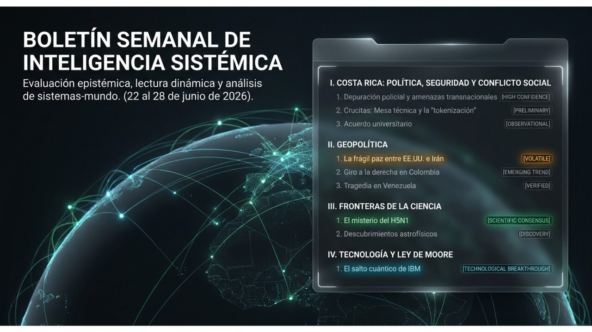
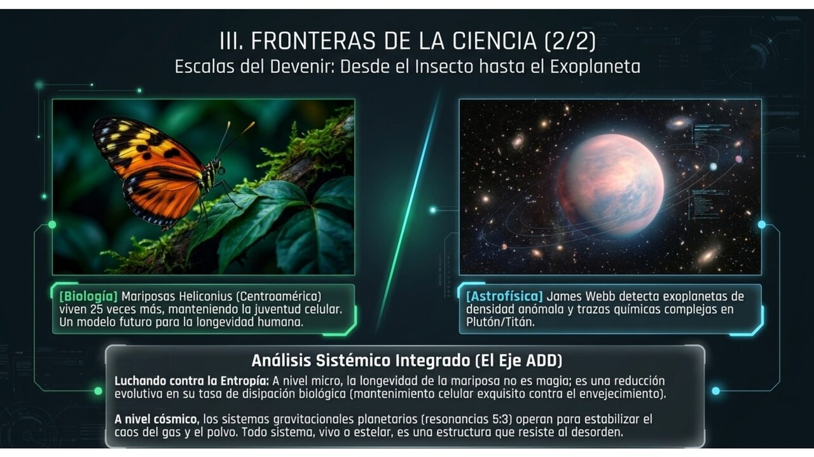
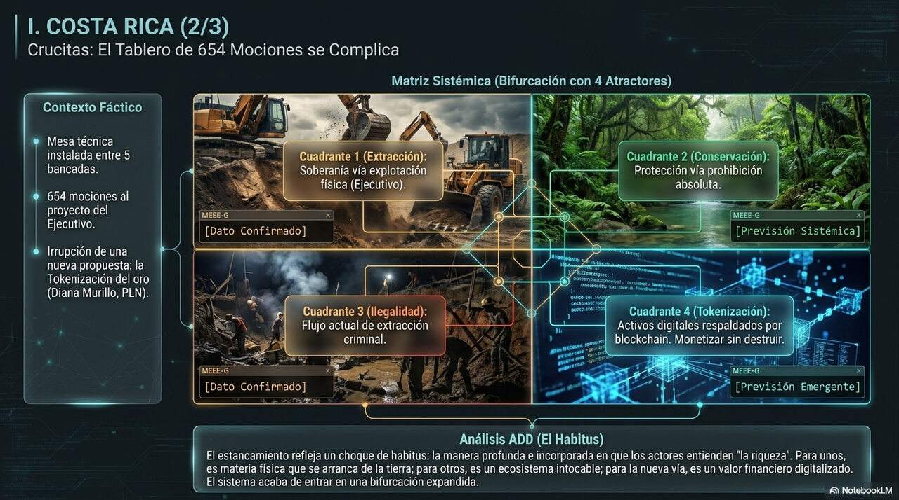

Las seis preguntas de la semana, explicadas con calma, para quien quiera entender el mundo.
Edición N.° 011 · Popular·Semana del 20 al 28 de junio de 2026·San José, Costa Rica

Boletín Semanal N.° 011 · Edición para todo público · San José, Costa Rica.
Estimado lector, estimada lectora:
Esta semana el mundo no para. Irán y Estados Unidos instalaron en Suiza el mecanismo que puede llevar al primer acuerdo de paz serio en meses. Colombia eligió presidente por un margen tan ajustado que se contaron los votos dos veces. Y la ciencia entregó dos sorpresas en terrenos muy distintos: una sobre un virus que lleva dos años desconcertando a los ganaderos, y otra sobre una mariposa de nuestros bosques tropicales que casi no envejece.
También esta semana IBM anunció un chip de computadora que parece salido de una película de ciencia ficción. Y en la Asamblea Legislativa de Costa Rica entró una propuesta nueva al debate sobre Crucitas: en lugar de sacar el oro del suelo, convertirlo en algo digital sin tocarlo.
Le contamos todo de la misma forma en que se lo contaríamos a un vecino, sentados en el corredor. Sin perder ni un gramo de seriedad —porque usted se merece la verdad completa—, pero sin las palabras que solo entienden los especialistas.
¿Llegaron por fin a un acuerdo serio entre Irán y Estados Unidos?
hay un plan de 60 días firmado en Suiza, pero el punto más difícil todavía queda para despuésDos países, el mismo texto, dos historias distintas para sus propios ciudadanos.
Qué pasó de verdad
El sábado 21 de junio, en un complejo de reuniones en Suiza llamado Bürgenstock, diplomáticos de Irán y de Estados Unidos se sentaron a negociar, con Qatar y Pakistán como intermediarios. Después de casi dieciocho horas de conversaciones, salieron con algo concreto: una hoja de ruta de sesenta días y tres grupos de trabajo para seguir negociando en temas de armas nucleares, sanciones económicas y resolución de disputas.
Lo inmediato se sintió de inmediato en los mercados: el precio del petróleo —el famoso "Brent"— cayó a unos 79 dólares por barril, el nivel más bajo desde que el conflicto comenzó en febrero. Estados Unidos también permitió temporalmente que Irán venda petróleo durante esos 60 días, e Irán obtuvo acceso a 12.000 millones de dólares que tenía bloqueados.
Sin embargo, la semana tuvo un tropiezo: Irán suspendió brevemente el diálogo después de que el presidente Trump amenazó con reanudar los ataques si Irán no controlaba a sus aliados en el Líbano. Y hubo una contradicción llamativa: el vicepresidente de EE.UU. dijo en público que Irán había aceptado "el primer paso hacia deshacerse del arma nuclear". Irán lo negó de forma rotunda: sus portavoces dijeron que el tema nuclear no se tocó ni un minuto durante las dieciocho horas de conversaciones.
Qué tan seguros estamos
Termómetro de certeza
✅Esto lo sabemos seguro: las negociaciones en Suiza ocurrieron, los mediadores lo confirmaron, y el petróleo bajó a mínimos de cuatro meses.
🤔Esto creemos, pero no es seguro: que los tres grupos de trabajo van a encontrar un lenguaje común sobre lo nuclear en 60 días. La semana ya mostró que cada gobierno le cuenta a su público una historia diferente del mismo acuerdo.
💭Esto es solo una posibilidad: que el proceso de 60 días llegue a un acuerdo definitivo sin que un tercer actor —Israel, Hezbolá, o un accidente— lo interrumpa.
Por qué esto todavía no está cerrado
Imagínese dos personas que firman un contrato, pero cada una lo interpreta diferente y le cuenta una cosa distinta a su familia cuando llega a casa. Eso es lo que pasó esta semana: el texto del acuerdo dice algo, pero EE.UU. anunció que Irán aceptó deshacerse del arma nuclear, e Irán salió a decir que eso no se habló. Ambas partes le están hablando a su propio público con la versión que les conviene. Mientras esas dos versiones no se reconcilien, la tensión sigue ahí, aunque el papel diga "paz".
🌱 ¿Y en Costa Rica, qué tiene que ver?
Costa Rica no produce petróleo: lo compramos todo afuera. Cuando el barril sube, nos sube la gasolina, el transporte, y con el tiempo hasta los precios en el supermercado. Con el Brent bajando a 79 dólares —frente a más de 110 en los peores momentos del conflicto—, si esa tendencia se mantiene, algo de alivio debería llegar con el tiempo. La cautela es que ese alivio depende de que el proceso de 60 días no se caiga.
¿Hacia dónde puede ir esto?
→
Camino tranquilo: los tres grupos técnicos convergen, lo nuclear encuentra una fórmula en 60 días, y el petróleo se estabiliza bajo los 80 dólares.
→
Camino bloqueado: cada parte sigue leyendo el acuerdo de forma distinta, el proceso se congela pero sin romperse, y los precios quedan inestables.
→
Camino de vuelta atrás: un incidente —Hezbolá, Israel, una amenaza de Trump— vuelve a suspender las negociaciones y el conflicto regresa.
Política internacional
¿Cómo quedó Colombia después de una elección que se ganó por menos de un punto?
De la Espriella será presidente, Cepeda lo reconoció, y Petro quedó inconformo pero sin recurso formalDos atractores casi iguales, un margen de 250.000 votos — y Colombia eligió la derecha.
Qué pasó de verdad
El domingo 21 de junio, Colombia eligió presidente en segunda vuelta. Abelardo de la Espriella, un abogado de derecha, obtuvo el 49,66 % de los votos. Iván Cepeda, el candidato apoyado por el gobierno actual del presidente Petro, quedó con el 48,70 %. La diferencia fue de unos 250.000 votos en un país de 40 millones de electores —casi nada.
Con el 99,99 % de las mesas contadas, los jueces electorales confirmaron que la diferencia real era inferior al 0,7 % respecto al primer conteo: no hubo fraude de escala. Cepeda reconoció los resultados y llamó a una transición ordenada. Petro, en cambio, cuestionó el proceso, habló de posibles irregularidades y de injerencia externa, pero nunca presentó una impugnación formal ante la autoridad electoral. De la Espriella asumirá el poder el 7 de agosto.
Qué tan seguros estamos
Termómetro de certeza
✅Esto lo sabemos seguro: De la Espriella ganó con 49,66 % frente a 48,70 %. Los jueces electorales confirmaron que no hubo irregularidades significativas, y Cepeda reconoció el resultado.
🤔Esto creemos, pero no es seguro: que el nuevo gobierno podrá implementar su programa de mano dura sin grandes choques con el Congreso, que está muy fragmentado.
💭Esto es solo una posibilidad: que Petro acabe reconociendo formalmente el resultado antes del 7 de agosto, en lugar de mantener la narrativa de ilegitimidad.
Por qué importa más de lo que parece
Un margen de 250.000 votos en 40 millones es una señal de que Colombia estaba partida en dos, casi exactamente. El voto que inclinó la balanza no fue el de la derecha ni el de la izquierda: fue el del centro, que decidió a último momento. Ahora el país entra en un período de reorganización: la derecha al gobierno, la izquierda a la oposición con Petro como voz de ese bloque, y el centro como árbitro de lo que venga. Eso no es un resultado tranquilo; es un tablero listo para el próximo choque.
🌱 ¿Y en Costa Rica, qué tiene que ver?
Colombia y Costa Rica compartimos algo: somos países que dependemos de mantener buena relación con Estados Unidos, y ambos lidiamos con el narcotráfico y la migración a diario. Con De la Espriella —que recibió el respaldo público de Trump— en el gobierno, la presión sobre el Darién y las rutas migratorias puede cambiar. Si Colombia endurece sus controles, los flujos que pasan por nuestra frontera con Panamá podrían reorientarse o intensificarse. Eso no es abstracto: afecta a las comunidades fronterizas de Costa Rica.
¿Hacia dónde puede ir esto?
→
Transición ordenada: Cepeda mantiene su reconocimiento, Colombia pasa el poder el 7 de agosto sin turbulencia, la institucionalidad se sostiene.
→
Tensión persistente: Petro mantiene la narrativa de ilegitimidad desde la oposición, generando ruido político sin afectar el traspaso formal del poder.
→
Bloqueo legislativo: el Congreso fragmentado le dificulta al nuevo gobierno implementar su programa; los primeros meses se vuelven un forcejeo.
Ciencia · Salud animal
¿Por qué la gripe aviar ataca las ubres de las vacas y no sus pulmones?
porque el virus tiene una "llave" que solo abre ciertos "candados" del cuerpo — y en las vacas esos candados están en la ubre, no en el pechoLa «llave» del H5N1 encaja en la ubre de la vaca, pero no en el pulmón — ese es el secreto que tardó dos años en resolverse.
Qué pasó de verdad
Desde 2024, el virus de la gripe aviar H5N1 lleva infectando granjas lecheras en Estados Unidos y produciendo algo que nunca se había visto: las vacas enfermas tienen mastitis —inflamación de la ubre— pero sus pulmones están bien. Nadie entendía por qué un virus respiratorio atacaba el sistema mamario y no el respiratorio. Esta semana, un equipo de las universidades de Pittsburgh y Harvard publicó la respuesta en la revista científica Science Advances.
El hallazgo es elegante en su simplicidad: el H5N1 necesita unos receptores específicos en las células para poder entrar, como una llave que solo abre cierto tipo de candado. En las vías respiratorias de las vacas, esos candados son escasísimos. Pero en el tejido de la ubre son abundantísimos. La glándula mamaria de la vaca resultó ser, en palabras del investigador principal, un "terreno de cría perfecto" para este virus. Para cuando se publicó el estudio, el brote había afectado más de 800 granjas en 16 estados de EE.UU.
Lo que este descubrimiento no responde —y los propios científicos lo dicen con claridad— es qué mutación necesitaría el H5N1 para empezar a infectar también los pulmones humanos. Esa barrera sigue en pie por ahora, y mientras esté en pie, el riesgo de pandemia humana es posible pero no inminente.
Qué tan seguros estamos
Termómetro de certeza
✅Esto lo sabemos seguro: el mecanismo molecular está publicado y revisado por otros científicos. La ubre bovina concentra los receptores; los pulmones de la vaca no los tienen. La barrera molecular que separa al virus de los pulmones humanos sigue intacta.
🤔Esto creemos, pero no es seguro: que analizar los receptores de diferentes especies va a servir para predecir cuáles son vulnerables. Es razonable, pero requiere validación en más especies.
💭Esto es solo una posibilidad: que este hallazgo cambie los protocolos de vigilancia veterinaria mundial para monitorear tejidos mamarios y no solo síntomas respiratorios. Depende de que las instituciones adopten la nueva ciencia.
Por qué importa, en cristiano
El valor de este estudio no es que resuelva el problema del H5N1 —no lo resuelve. Su valor es que da un mapa de qué buscar y dónde buscar. Antes, los inspectores veterinarios buscaban síntomas respiratorios. Ahora saben que deben vigilar también el tejido mamario en las granjas lecheras, y que esa misma lógica de "dónde están los candados" se puede aplicar a cualquier especie nueva que el virus empiece a infectar. Es como pasar de buscar una aguja a tener el mapa del pajar.
🌱 ¿Y en Costa Rica, qué tiene que ver?
Costa Rica tiene un sector ganadero y lechero importante, y por ahora el H5N1 no ha sido reportado aquí. Pero "no reportado" no es lo mismo que "ausente": podría ser que simplemente no se ha buscado con los protocolos correctos. El SENASA —que cuida la sanidad animal en el país— debería revisar si sus protocolos incluyen ya el análisis de tejido mamario en vacas con producción anómala, y no solo síntomas respiratorios. El país también tiene capacidad científica en la UCR para articularse con estas redes de vigilancia predictiva.
¿Hacia dónde puede ir esto?
→
Vigilancia actualizada: los protocolos internacionales incorporan el análisis de receptores; la detección mejora y el riesgo se gestiona con más anticipación.
→
Adopción lenta: el cambio de paradigma tarda años en llegar a las instituciones; el virus sigue ampliando su rango sin que los sistemas de alerta lo detecten a tiempo.
→
Mutación crítica: el virus desarrolla afinidad por los receptores respiratorios humanos. El escenario pandémico pasa de posible a urgente.
Ciencia · Nuestra tierra
¿Sabía que en los bosques de Costa Rica hay una mariposa que vive hasta 25 veces más que sus parientes?
el género Heliconius casi no envejece — y los científicos quieren saber si ese secreto puede ayudar a los humanos

Vive 25 veces más que sus parientes sin casi envejecer — y es de nuestros bosques tropicales.
Qué pasó de verdad
El 16 de junio, un equipo de las universidades de Bristol, Smithsonian y Tufts publicó en la revista Nature Communications el análisis más completo hasta la fecha de la longevidad en el género Heliconius: esas mariposas tropicales de colores vivos, con alas alargadas, que habitan desde el sur de México hasta Bolivia y que probablemente usted ha visto volando en los parques o en los bordes de los bosques de Costa Rica.
El hallazgo central: las mariposas Heliconius viven en promedio hasta tres veces más que sus parientes más cercanos dentro de la misma familia. Y en los casos extremos, la diferencia es dramática: la especie Heliconius hewitsoni alcanzó un máximo de 348 días de vida, mientras que su pariente Dione juno vivía apenas 14 días. Veinticinco veces más.
Lo que hace más interesante el resultado es que no es solo cosa de comer bien. Los investigadores probaron quitarles el polen extra que estas mariposas consumen como adultas —su fuente especial de proteínas—, y aun así seguían viviendo más que sus parientes alimentados normalmente. Eso quiere decir que la longevidad está inscrita en su biología, no solo en su dieta. La investigadora principal propone al género Heliconius como nuevo modelo científico para estudiar el envejecimiento.
Qué tan seguros estamos
Termómetro de certeza
✅Esto lo sabemos seguro: las mariposas Heliconius viven mucho más que sus parientes, con casos de hasta 25 veces más. Los experimentos de dieta confirmaron que el efecto no es solo por comer mejor: es biológico.
🤔Esto creemos, pero no es seguro: que este género se convierta en el nuevo modelo estándar para la investigación del envejecimiento. Depende de que los resultados sean reproducibles en laboratorio.
💭Esto es solo una posibilidad: que los mecanismos que usan estas mariposas para no envejecer sean útiles para los humanos. La biología de una mariposa y la de una persona son muy diferentes, y esa brecha requiere mucha investigación.
Por qué importa, en cristiano
Lo que estos científicos encontraron es que hay un ser vivo que evolucionó una forma de mantenerse "en buen estado" durante mucho más tiempo que sus vecinos. Imagínese una máquina que, en lugar de desgastarse al ritmo normal, tiene piezas que se auto-reparan mejor y por más tiempo. La pregunta que se hacen los investigadores es: ¿cuáles son esas piezas?, ¿cómo funcionan?, ¿y se pueden encontrar mecanismos similares en los humanos? No es una promesa de inmortalidad, sino el comienzo de un mapa sobre por qué envejecemos y si algo de ese proceso se puede modificar.
🌱 ¿Y en Costa Rica, qué tiene que ver?
El Heliconius no es un descubrimiento lejano que nos llega de otro planeta: vive aquí, en nuestros bosques. El país tiene insectarios, investigadores en el CATIE y en la UCR, y datos de campo que podrían ser muy valiosos para esta línea de trabajo. La pregunta estratégica es la misma que aparece con los hongos del N.° 010 y con Crucitas: ¿va a ser Costa Rica el lugar donde existe el recurso biológico, o también el lugar donde se investiga y se crea el conocimiento? Esa diferencia determina si al final capturamos parte del valor generado, o solo aportamos el material base.
Una conexión que vale la pena pensar
Esta semana, la Asamblea Legislativa discutió si se legaliza la minería de oro a cielo abierto en Crucitas —un proyecto que removería la capa superficial del suelo en una zona de bosque tropical. Ese mismo suelo es el hábitat del Heliconius. No se trata de decir que un valor cancela al otro, sino de poner en la misma mesa la pregunta: ¿qué tipo de riqueza queremos que produzca nuestro territorio? Ver el Anexo especial sobre Crucitas y el subsuelo vivo →
¿Hacia dónde puede ir esto?
→
Translación exitosa: los mecanismos de longevidad de Heliconius resultan conservados en mamíferos y abren una nueva línea en medicina del envejecimiento.
→
Modelo valioso pero específico: los mecanismos son reales pero no transferibles directamente a humanos; Heliconius se convierte en modelo de insecto sin aplicación clínica directa.
→
Captura asimétrica: los hallazgos se patentan en laboratorios del norte; la biodiversidad costarricense aporta el sustrato sin capturar la renta del conocimiento derivado.
Tecnología · Semiconductores
¿Qué quiere decir que IBM hizo un chip que apila transistores como pisos de un edificio?
durante décadas hicimos los transistores más y más pequeños — ya no se puede más, así que IBM empezó a construirlos en alturaCuando ya no podemos ir más a lo ancho, construimos hacia arriba — eso es exactamente lo que hizo IBM.
Qué pasó de verdad
El 25 de junio, IBM anunció el primer chip de computadora con tecnología llamada "nanostack" y una denominación de "sub-1 nanómetro" —o 0,7 nanómetros. Para tener una idea de la escala: un cabello humano tiene unos 80.000 nanómetros de diámetro. Lo que IBM anunció es algo casi inimaginablemente pequeño: un chip del tamaño de una uña que empaqueta unos 100.000 millones de transistores, las piezas que hacen que una computadora piense.
Lo verdaderamente novedoso no es el tamaño, sino la arquitectura. Durante décadas, la industria fue reduciendo las piezas en una sola capa plana, como si fueran casas cada vez más pequeñas en un terreno fijo. IBM propone ahora apilarlas en dos capas, como si construyera un edificio de dos pisos en lugar de ampliar el terreno. Los primeros ensayos mostraron una mejora de hasta el 70 % en eficiencia energética frente al chip anterior de IBM.
Hay una cosa honesta que vale la pena decir: el "0,7 nanómetros" es un nombre de mercado, no una medida física real. Las distancias entre transistores no han cambiado dramáticamente; lo que cambió es cómo se organizan. E IBM todavía no tiene socio de fabricación confirmado para producirlos en masa: proyecta que esta tecnología llegará al mercado de consumo en cinco a diez años.
Qué tan seguros estamos
Termómetro de certeza
✅Esto lo sabemos seguro: IBM demostró que la arquitectura nanostack funciona en un chip real. Los resultados se presentaron en una conferencia internacional y fueron verificados por medios especializados como el MIT Technology Review.
🤔Esto creemos, pero no es seguro: que el "sub-1 nanómetro" sea una medida física real — es, en realidad, un nombre de marketing. El logro arquitectónico es genuino, pero el nombre puede crear expectativas exageradas.
💭Esto es solo una posibilidad: que llegue al mercado en 5–10 años, como IBM dice. El paso de laboratorio a producción masiva es el más difícil — y todavía no hay una empresa fabricante confirmada.
Por qué importa, en cristiano
La industria de los chips lleva años en un callejón: hacer los transistores más pequeños en una sola capa —la fórmula que funcionó desde los años 60— ya no da más. Es como si una ciudad no pudiera crecer más hacia los lados porque llegó al mar, y tuviera que empezar a crecer hacia arriba. IBM propone exactamente eso: construir en altura. Si las grandes empresas fabricantes adoptan esta forma de hacerlo, la computación —incluida la inteligencia artificial— va a tener otra década de crecimiento acelerado. Si no lo adoptan, el anuncio quedará como un experimento impresionante pero sin futuro inmediato en el mercado.
🌱 ¿Y en Costa Rica, qué tiene que ver?
Costa Rica tiene operaciones de Intel desde 1997. Intel no fabrica los chips aquí —eso se hace en otros países— sino que en el país se hacen los procesos de empaque y prueba. A medida que la tecnología avanza hacia arquitecturas más complejas como el nanostack, esas operaciones van a necesitar equipos y habilidades más especializados. La pregunta que el país debería hacerse es si está preparando a su gente y actualizando sus capacidades para seguir siendo relevante en esa cadena, conforme el estándar tecnológico sube.
¿Hacia dónde puede ir esto?
→
Adopción rápida: las grandes empresas fabricantes incorporan el nanostack; antes de cinco años hay chips comerciales con esta arquitectura en computadoras y celulares.
→
Transición larga: la tecnología existe pero tarda en fabricarse a escala; el nanostack coexiste con los chips actuales durante una década mientras se resuelven los desafíos de producción.
→
Fragmentación geopolítica: las restricciones entre EE.UU. y China generan dos ecosistemas de chips separados; el nanostack queda en el bloque occidental mientras China desarrolla su propia respuesta.
Costa Rica · Política
¿Qué es eso de «tokenizar el oro» y por qué dividió a la Asamblea esta semana?
una diputada propuso convertir el oro de Crucitas en activos digitales sin sacarlo del suelo — y eso abrió un debate nuevo que no existía la semana pasada

Cuatro caminos posibles para el mismo oro — y esta semana entró uno nuevo que nadie había propuesto antes.
Qué pasó de verdad
El 26 de junio, diputados de las cinco bancadas con representación en la Asamblea se sentaron en una mesa técnica para intentar destrabar el proyecto del gobierno que busca legalizar la minería de oro a cielo abierto en Crucitas —algo prohibido en Costa Rica desde 2010. El debate lleva meses bloqueado por 654 mociones presentadas por la oposición.
En esa mesa técnica, la diputada Diana Murillo, del PLN, presentó una propuesta que no existía antes en la discusión: la "tokenización" del oro. La idea es convertir el oro que está bajo tierra en Crucitas en activos digitales —algo así como certificados respaldados por blockchain, una tecnología de registro que no se puede falsificar— sin necesidad de sacar el oro físicamente del suelo. El argumento: el proyecto del gobierno tardaría ocho a diez años en producir ingresos; la tokenización los generaría en uno o dos años, y sin el impacto ambiental de una mina a cielo abierto.
La presidenta Fernández rechazó la propuesta con dureza. El jefe de fracción del partido de gobierno mostró apertura a discutirla como proyecto paralelo, si la oposición retira mociones del expediente principal. La mesa calificó el encuentro de "provechoso" —aunque con 654 mociones todavía en el aire y tres posiciones distintas, la resolución no es inminente.
Qué tan seguros estamos
Termómetro de certeza
✅Esto lo sabemos seguro: la mesa técnica ocurrió y todas las bancadas la calificaron de "provechosa". También sabemos que el área dañada actualmente por minería ilegal en Crucitas es menos del 1 % del distrito de Cutris (unos 10 a 15 km²), mientras el proyecto del gobierno habilitaría los 849 km² del distrito entero.
🤔Esto creemos, pero no es seguro: que la tokenización genere ingresos en uno a dos años como dice el PLN. La propuesta está basada en un modelo de Brasil, pero las condiciones técnicas en Crucitas son distintas y hay requisitos que todavía no están satisfechos.
💭Esto es solo una posibilidad: que la mesa técnica conduzca a un acuerdo antes de que cierre el período de sesiones. Con 654 mociones y tres posiciones distintas en juego, el bloqueo puede extenderse.
Por qué esto es diferente a lo que había antes
Hasta la semana pasada, el debate de Crucitas era binario: el gobierno quería minar, la oposición quería que no. La tokenización es una tercera opción que no cabe en ninguno de los dos campos: no extrae el oro (así que no activa las asociaciones negativas de la minería) pero sí lo monetiza (genera ingresos). Es como si en una discusión sobre talar un bosque o no talarlo, alguien propusiera cobrar una renta por conservarlo como activo. No es una broma: el debate se vuelve más complejo, y eso puede ser bueno o malo dependiendo de para qué sirva esa complejidad.
🌱 ¿Y en Costa Rica, qué tiene que ver?
El debate de Crucitas es uno de los más importantes que tiene el país ahora mismo, y va más allá de si hay o no mina. Toca preguntas fundamentales: ¿qué tipo de riqueza queremos extraer del territorio?, ¿quién diseña los instrumentos financieros que usamos para valorar esa riqueza?, ¿y a quién le queda el beneficio? Si las reglas de la tokenización las escriben fuera del país —como en el antecedente brasileño—, Costa Rica aportaría el subyacente (el oro) y otra parte capturaría la ganancia. Eso ya lo hemos visto antes con otros recursos naturales.
¿Hacia dónde puede ir esto?
→
Acuerdo de tres vías: las bancadas negocian un paquete que reduce el área del proyecto del gobierno, avanza la tokenización como proyecto paralelo, y endurece las sanciones a la minería ilegal.
→
Tokenización como salida: el proyecto del gobierno se archiva; la tokenización avanza como la "tercera vía" que le permite a todas las partes no perder del todo.
→
Parálisis extendida: las 654 mociones no se retiran, la mesa técnica no genera un compromiso vinculante, y el tema se arrastra sin resolución durante meses.
Rincón de curiosidades
cositas para sorprender a la familia en la sobremesa
¿Sabía que...?
El precio del petróleo bajó esta semana a 79 dólares el barril, el nivel más bajo desde que el conflicto entre EE.UU. e Irán comenzó en febrero. En los peores momentos superó los 110 dólares.
¿Sabía que...?
La mariposa Heliconius hewitsoni puede vivir hasta 348 días, casi un año entero. Su pariente más cercana, la Dione juno, vive apenas 14 días. Ambas se ven en los bosques de Costa Rica.
¿Sabía que...?
El chip de IBM empaqueta 100.000 millones de transistores en el espacio de una uña. Si cada transistor fuera del tamaño de una hormiga, no cabrían ni en diez estadios nacionales.
¿Sabía que...?
La diferencia entre De la Espriella y Cepeda en Colombia fue de 250.000 votos en un padrón de 40 millones de electores. En porcentaje: menos de un punto. Así de reñida quedó la elección.
Lo que todavía queda en el aire
preguntas honestas, que nadie puede responder todavía con certeza
¿Van a lograr Irán y Estados Unidos ponerse de acuerdo en lo nuclear en 60 días, o cada parte seguirá contando una versión diferente del mismo acuerdo?
¿Reconocerá Petro formalmente el resultado de las elecciones colombianas antes del 7 de agosto, o la transición llegará con sombra de legitimidad cuestionada?
¿Actualizarán los veterinarios del mundo sus protocolos para monitorear tejido mamario en busca del H5N1, o el cambio tardará años en llegar a las instituciones?
¿Serán los mecanismos de longevidad del Heliconius útiles para la medicina humana, o quedarán como un dato fascinante de la biología de los insectos?
¿Adoptará alguna gran empresa fabricante el nanostack de IBM, o la arquitectura se quedará como una demostración de laboratorio impresionante pero sin futuro comercial inmediato?
¿Puede Costa Rica diseñar un instrumento de tokenización del oro que le deje la ganancia a los costarricenses, o reproducirá la asimetría que ya conocemos con otros recursos naturales?
Una palabra sobre cómo trabajamos. Detrás de cada una de estas historias hay un análisis técnico bastante más detallado: revisamos qué tan confiable es cada dato, estudiamos cómo se conectan los hechos entre sí, y miramos el lugar de Costa Rica en el mundo grande. Esa versión completa, con todos los códigos epistémicos y la lectura dinámica, también está disponible para quien quiera ir más al fondo.
Esta edición nace de una convicción sencilla: entender el mundo no debería ser un privilegio de unos pocos. Por eso le contamos las cosas con calma y sin palabras complicadas, pero sin recortarle la verdad —porque tratar a alguien como capaz de comprender es la forma más honesta de respetarlo.
Como siempre: lo que aquí se cuenta es análisis, no una bola de cristal ni un consejo de qué hacer. El futuro nadie lo tiene asegurado, ni nosotros tampoco.